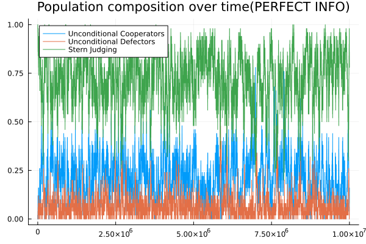
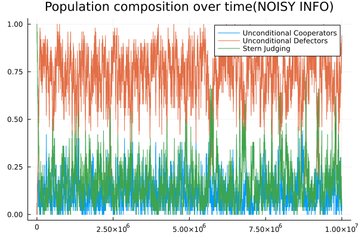
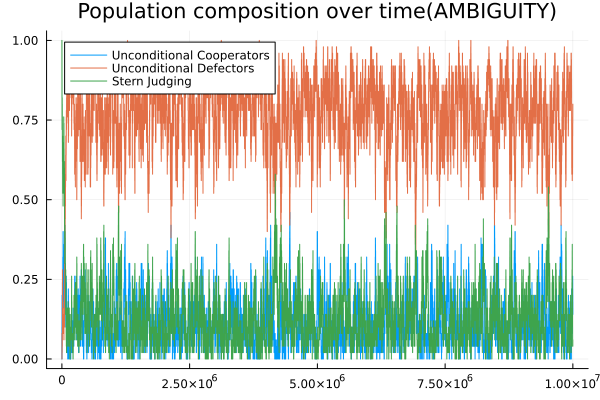

CCA CompEcon Project
Agent Based Model inspired by Christian Hilbea, Laura Schmida, Josef Tkadleca, Krishnendu Chatterjeea, and Martin A. Nowak (PNAS, 2018)
![]()
This report was created as part of the assessment for the Computational Economics Course in the PhD program at Collegio Carlo Alberto taught by Florian Oswald.
Research Goal
In the evolutionary game theory literature, it has been shown that cooperation among agents can be established when agents adopt a conditional strategy. In particular, indirect reciprocity has been studied through simulation implementing tournament of a gift game. In a gift game a donor and a recipient are matched together and the donor can decide to gift a benefit b to the recipient at a cost c. The game is interesting because, in particular with large group with perfect information, the donor’s choice can be determined mainly by indirect reciprocity (i.e. A decides to cooperate with B only if B has previously cooperated with C). Indeed, it is a game where reputation, and information about reputation, plays an important role. Eight conditional strategies, the leading eights, have been proved to provide consistent cooperation over time and to be immune of invasions both by unconditional defectors (ALLD) and unconditional cooperators(ALLC) under some conditions. In particular, Ohtsuki and Iwasa (2004; 2006) and showed that Stern Judging, one of the leading eights, is evolutionary stable only when there is a trembling hand situation in applying the norm by the conditional players and ALLD sometimes cooperate and ALLC sometimes defect. Otherwise conditional cooperators are invaded by ALLC, which in turn are invaded by ALLD: However, the recent work by Hilbe et al (2018) shows that when information is noisy and reputations are not univocally shared by all conditional players, cooperation collapses and conditional players either do not survive or enter into cycle of invasions with ALLD. One strategy that suffers particurarly from this noisy information is Stern Judging. According to Stern Judging, an agent should always cooperate with a player with good reputation and awalys defect with a players with a bad reputation. Hence, a good reputation is caused by cooperating with someone good and defecting with someone bad, and a bad reputation is caused by defecting with someone good and cooperating with someone bad. Given this, the present research projects aims at verifying whether having ambiguity averse players can solve the collapse of cooperation due to imperfect information. The ambiguity aversion of players is represented through a maxmin utility function (Gilboa and Schmeidler, 1986). Different players hold different priors abouth others’ reputation and instead of simply following the norm, agents’ behaviour is the strategy that maximize the minum possible utility according to their priors. I thus decided to implement an Agent Based Model(ABM), with three type of agents: ALLC, ALLD and ambiguity averse conditional players following the Stern Judging Norm Then all agents at each period play as donor in a gift game with a random partner (this means that an agent plays as donor only once in a period but can play as a recipient many or zero times in a period). The prior can be update truthfully with a high probability (0.5), or it can be wrongly updated (0.2) or a new prior can be added (0.1). The evolution dynamics start with a population od only conditional players. Randomly, one agent each turn has a small probability (0.001) of randomly mutate kind, otherwise she learn according to the Fermi imitation rule the kind of another random agent. The Fermi imitation rule is such that the higher the payoff of the random agent selected the higher the probability for the imitating agent to learn his kind. I implemented also the case with perfect information and noisy information, using the data by the authors, to check that my model for ambiguity averse agents was not biased.
References
Gilboa, I., & Schmeidler, D. (1989). Maxmin expected utility with a non-unique prior. Journal of Mathematical Economics, 18(2), 141–153. Hilbe, C., Schmid, L., Tkadlec, J., Chatterjee, K., & Nowak, M. A. (2018). Indirect reciprocity with private, noisy, and incomplete information. Proceedings of the National Academy of Sciences, 115(48), 12241–12246. Ohtsuki H, Iwasa Y (2004) How should we define goodness?—Reputation dynamics in indirect reciprocity. J Theor Biol 231:107–120. Ohtsuki H, Iwasa Y (2006) The leading eight: Social norms that can maintain cooperation by indirect reciprocity. J Theor Biol 239:435–444.
High Level Description of Computational Problem in Paper
This paper develops an agent-based computational model of indirect reciprocity under the Stern Judging norm. The main computational task consists of simulating repeated gift-game interactions among heterogeneous agents under different informational environments: perfect information, noisy information, and ambiguity aversion.
Agents are characterized by reputational states and behavioral strategies (ALLC, ALLD, and conditional cooperators). In each simulation step, agents are randomly matched to interact in a donation game where cooperation decisions depend on the recipient’s reputation for conditional agents while ALLC and ALLD always cooperate and defect respectively. An action error is included such that with a low probability agents deviate from their rules. Reputation dynamics follow the Stern Judging update rule.
The model implements several computational procedures. Under noisy information, agents may experience observation errors and misperception. Under ambiguity aversion, agents maintain multiple priors over reputations and choose actions according to a maxmin expected utility criterion. Utilities are computed by evaluating the minimum expected payoff across stored priors.
Evolutionary dynamics are implemented through a Fermi imitation process with mutation. At each step, a subset of agents may revise their strategy by probabilistically imitating more successful agents based on payoff differences.
The simulations are implemented in Julia using the Agents.jl framework for agent-based modeling. Additional packages include Plots.jl, StatsPlots.jl, DataFrames.jl, and Statistics. The replication package contains modular implementations for agent definitions, reputation updating, noisy information procedures, ambiguity updating rules, payoff calculations, and data collection routines. Outputs include time-series measures of cooperation rates, population composition, and average payoffs by strategy type.
Results
The simulations reproduce the main findings of the literature on indirect reciprocity and Stern Judging. ## Perfect Information Under perfect information, agents can accurately observe the reputation of others. In this setting, conditional agents cooperate with reputable individuals and defect against badly reputed ones, successfully enforcing cooperative norms Under perfect information and with small implementation errors (“trembling hand”), conditional cooperators remain evolutionarily stable and sustain high levels of cooperation over time. The population quickly converges toward a state dominated by conditional agents, while unconditional defectors are unable to successfully invade the population.

This allows level of cooperations to stay high during the whole part of the evolutionary dynamics..png) After 100.000 rounds with 100 agents, the final level of cooperation is and population shares are the following:
After 100.000 rounds with 100 agents, the final level of cooperation is and population shares are the following:
Noisy Information
When reputational information becomes noisy or imperfect, the dynamics change substantially. Errors in observing reputations reduce the ability of conditional agents to correctly discriminate between cooperative and defective individuals. Consistent with the literature:
- Conditional cooperators are progressively invaded by unconditional defectors (ALLD).

- Cooperation levels collapse over time.
.png)
- Reputation mechanisms become less effective under uncertainty.
- The population converges toward low-cooperation equilibria.
The ambiguity-averse extension produces qualitatively similar outcomes under imperfect information. Conditional agents still fail to sustain cooperation in the long run, and defectors eventually dominate the population.
However, the simulations suggest that:
The transition toward a whole population of defectors occurs more rapidly.

Cooperation deteriorates faster than in the standard noisy-information setting.
Ambiguity aversion amplifies the destabilizing effect of informational uncertainty. Overall, the results highlight the central importance of reliable reputational information for sustaining indirect reciprocity. Even small imperfections in information transmission can undermine cooperative norms, while ambiguity aversion further accelerates the breakdown of cooperation.